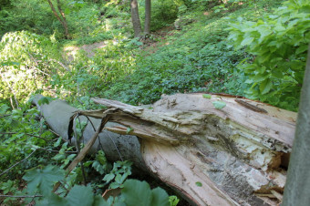

За тайната сделка между Саркози и Кадафи, пише френско издание
Николай Русинов-Чеци е обвинен в съучастие, съдът го остави в ареста
Безработицата сред тях е с 2,5% по-висока от общата за страната
Повдигнато му е обвинение за хомосексуални действия с малолетни

Община и собственици на парка в града се оправдаха с липса на средства